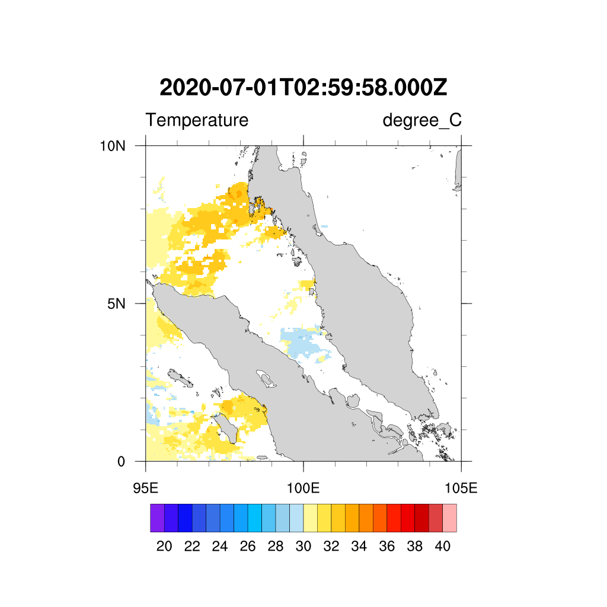

ATMOSPHERE INTERACTION RESEARCH
Sea Surface Temperature (SST)

Satellite Data
For the CEMACS experiment, we developed an automated system to download and process the relevant satellite data as listed below.
Data Specification
| Long Name | Sea Surface Temperature |
| Variables | Short sst |
| Latitude | 4320 |
| Longitude | 8640 |
| RGB | 3 |
| 8-bit color | 256 |
| Unit | Degree Celcius |
| Instrument | MODIS |
| Title | HMODISA Level-3 Standard Mapped Image and MODIST Level-3 Standard Mapped Image |
| Platform | Aqua and Terra |
| Temporal Range | Day |
| Map Projection | Equidistant Cylindrical |
| Spatial Resolution | 4.64km |
| Institution | NASA Goddard Space Flight Center, Ocean Ecology Laboratory, Ocean Biology Processing Group |
| Processing Level | L3 Mapped |
| CDM Data Type | Grid |
Satellite Data
For the CEMACS experiment, we developed an automated system to download and process the relevant satellite data as listed below.
- Remote Sensing Reflectance (RRS)
- Chlorophyll-a
- Photosynthetically Available Radiation (PAR)
- Particulate Organic Compound (POC) and Particulate Inorganic Compound (PIC)